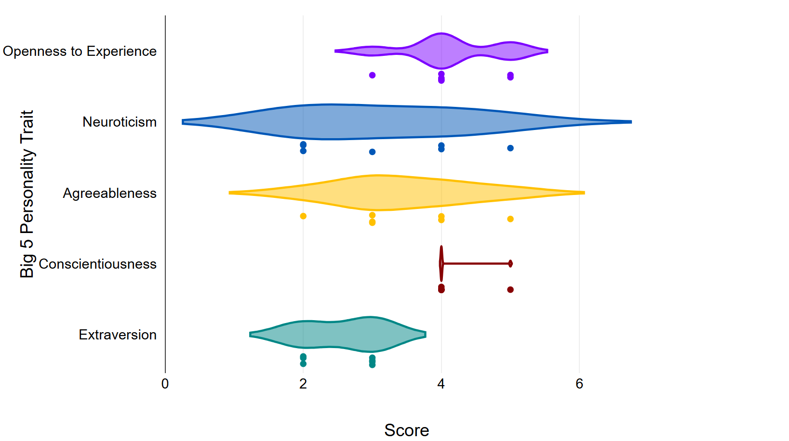
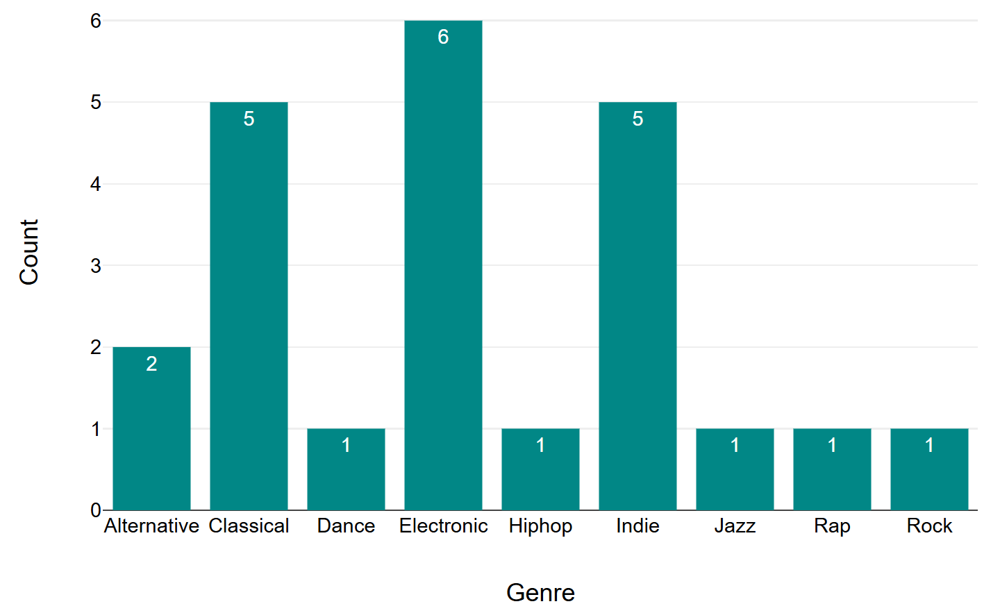
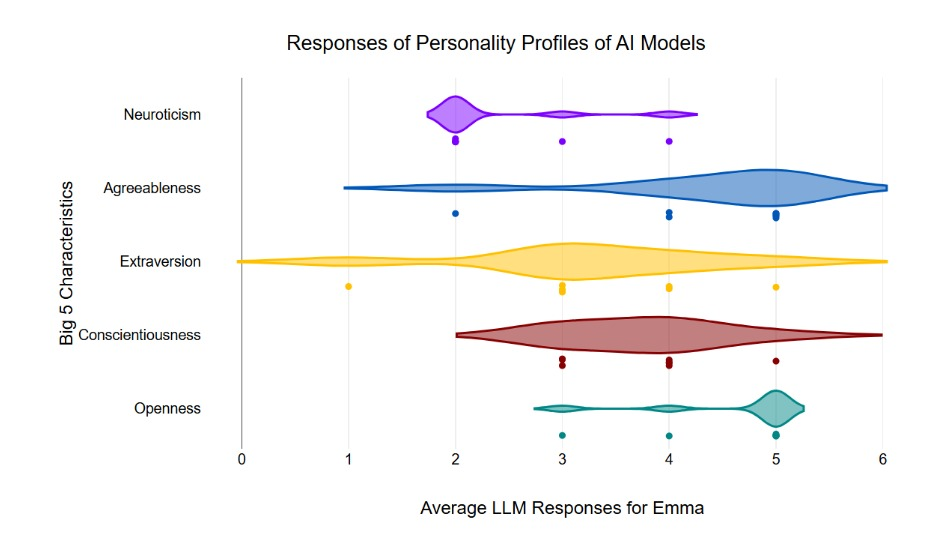
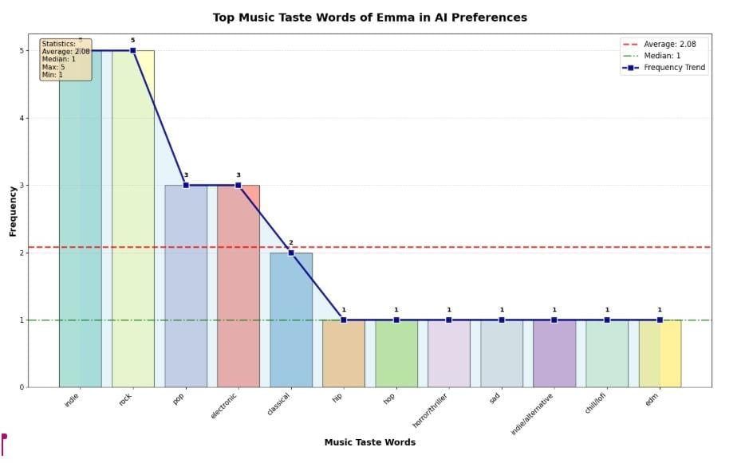
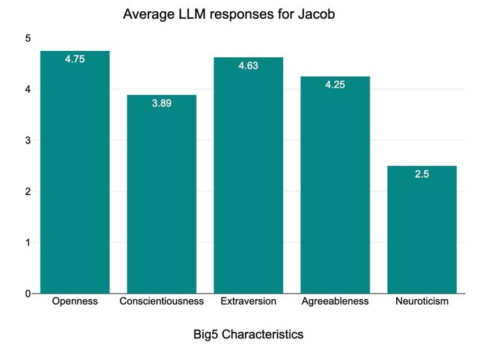
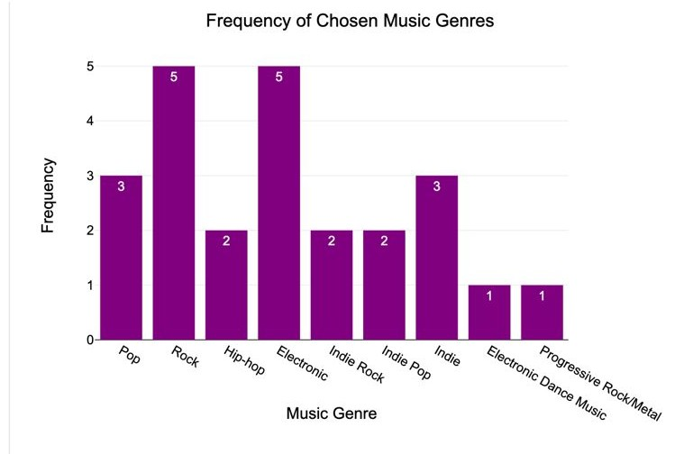

Methodology
Different stages were involved in order to conduct this study. Firstly, we decided to create the preliminary version of the website’s design. Secondly, with the assistance of Artificial Intelligence (AI), we developed a survey consisting of 20 questions, which would enable us to get deep and comprehensive responses. Thirdly, we designed different identities for three university students: Amy, Jacob, and Emma; and, finally, responses were collected through ten various Large Language Models (LLMs), and analysed afterwards.
Result & Discussion
Amy


The richest analysis was Gemma-3-1b-it, which provided specific artists (time periods for classical music) for its suggested genres. Gemma-3-4b-it also provided detailed subgenres in its suggestion (these subgenres were categorised into their broader genres) and provided time periods for classical music only, but not its other suggested genres.
Hallucinations occurred for both questions. Qwen2.5-1.5B misunderstood the questions and requested clarification for all questions. Both Qwen2.5-0.5B and Gemma-3-270m-it provided a repetition of the question on the question on big 5 personality traits. Gemma-3-270m-it also listed 4 purposes of listening to music rather than the questions’ 3 genres.
The AIs’ analysis of personality’s relations to music taste was relatively accurate, as Amy, who was overall rated moderately high in openness, was suggested genres with high valence and depth of electronic and indie in line with current studies (Greenberg et al., 2016). This moderately high openness also explains the suggestion for the not commonly liked genre of classical music (Rawlings & Ciancarelli, 1997).
Emma


According to different LLM models ( Gemma-3-1b-it, Gemma 3-4b-it, Qwen2.5-0.5B, Qwen2.5-3B, Qwen2.5-7B, Qwen2.5-14B, Yi-1.5-6B, Yi-1.5-9B), indie, rock, alternative are the most frequently provided by LLM models, which are mentioned in 7 out of 8 LLM models. The second-highest music genre recommended by LLM models is electronic, EDM, which is mentioned in 4 out of 8 models. And the following recommended genres are pop and classical, both of them mentioned in 3 out of 8 models. Also, there are errors in 2 LLM models, which did not reply effectively. So, the average music genres provided by LLM models tend to be alternatives which match the tastes of teenagers. Indie, rock, alternative are dominant in the responses, at nearly 80%, the second highest is electronic, EDM, in 50%, and the following are pop and classical, both at nearly 40%. This shows that the music genres of stimulated person in various LLMs responses tend to indie and rock, which is a somewhat modern taste in music.
The richest responses were Qwen2.5-7B, Qwen2.5-14B and Yi-1.5-9B provided specific music taste words such as horror/thriller music, emotive hardcore, etc. So, these responses show the specific personality traits which are analysed by the LLM models.
The poorest responses were Gemma-3-270m-it and Qwen2.5-1.5B answered ineffectively. Both of them fail to provide the answers to the research questions. Therefore, the responses show that both of these two LLM models could not provide meaningful data and responses to users, which may be caused by the backward technologies of LLM models.
According to the scores on the Five Factors of Personality, we can observe that there is some relationship between personality traits and music tastes. With higher scores of openness and agreeableness in Big 5, music tastes tend to be emotional and diverse, for example, classical and sad pop. Thus, it suggests that the personality is receptive to different types of music, showing their curiosity. Lower scores of extraversion in personality traits tend to avoid energetic music and prefer gentle music types such as classical and indie, which shows that their personality is introverted.
Moreover, it seems that there is no strong relationship between personality and neuroticism. As the personality trait emphasises emotional instability that can not correlate to rock and electronic.
Jacob


According to the obtained answers, Jacob’s answers demonstrate consistent patterns. Overall, throughout all obtained LLM responses, he scored points that match the designed identity: on average, 4.75 points in Openness, 3.89 in Conscientiousness, 4.63 in Extraversion, 4.25 in Agreeableness, and 2.5 in Neuroticism were scored.
High scores in Extraversion and Openness are concordant with high-energy music genres, such as pop, rock, and electronic. High-level agreeableness and conscientiousness align with the wide variety of music genres: along with genres that were chosen frequently (pop, rock, electronic) by LLMs, unique genres such as indie with its subgenres, progressive rock, and metal were also included in the responses. Such a variety also matches the research results: according to Cherry (2025), people who have a versatile music taste tend to be more extraverted, agreeable, and conscientious.
Overall Result
Overall, various answers and interpretations were obtained from Large Language Models, as they have different characteristics. It could be noted that, based on the parameters of each model, LLMs gave responses of different levels of richness. In the following instance, a model with a larger number of parameters provides better reasoning with specific examples, whereas a model with fewer parameters provides little or no reasoning and constrained response:
| Questions | Response of Qwen-2.5-0.5b | Response of Gemma-3-4b: |
|---|---|---|
| How well do the following words describe you? |
|
|
Based on the description of each character and LLMs according to them, generally, all models are able to predict the connection between certain personality traits and the ultimate music taste.
As in the example of descriptions of Jacob, Amy, and Emma, consistent music patterns were derived from almost all Large Language Models, despite the amount of parameters each model has.
References
Cherry, K. (2025). Music Preferences and Your Personality. Verywell Mind. https://www.verywellmind.com/music-and-personality-2795424# Greenberg, D. M., Kosinski, M., Stillwell, D. J., Monteiro, B. L., Levitin, D. J., & Rentfrow, P. J. (2016). The Song Is You. Social Psychological and Personality Science. https://doi.org/10.1177/1948550616641473
Rawlings, D., & Ciancarelli, V. (1997). Music Preference and the Five-Factor Model of the NEO Personality Inventory. Psychology of Music. https://doi.org/10.1177/0305735697252003
Acknowledgement
| Aruzhan SHYNGAZIYEVA 58628883 |
Introduction, Methodology, survey creation through CSV file, LLM’s response analysis |
|---|---|
| KWOK Sin Man 58239945 |
Introduction, LLM’s response analysis, code for about us. |
| CHIU Pak Hei 59297497 |
Code for index, survey and graph pages, LLM’s response analysis. |
Declaration of the use of GenAI:
As allowed by the assignment requirements, WE HAVE used AI tools (Deepseek) for the below when I was completing my assignment:
- Generating non-textual materials (such as images, PowerPoint slides, videos) to incorporate into my assignment.
- Drafting/refining an outline to organize my thoughts